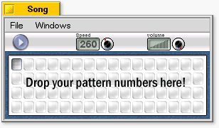

The Song Window

The Song window controls the whole song. You can...
- Start/stop playing the song
- Set the speed...
- ...and the main volume and...
- edit the play list
The play list is pure drag & drop: Take a number from the pattern window and drop it here, arrange the
numbers in the playlist with drag & drop and remove the numbers in the playlist by dragging them out of the window.
When you click the play button, the song is played. You can also select a pattern in the playlist with the mouse. Then the
song continues at that point.
|